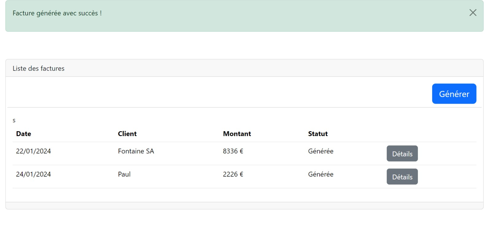

Tp worflow

Dans le cadre de ce TP, nous avons exploré la création de workflows.
- Objectif: Visualiser le workflow du cycle de vie d'une facture.
- Contraintes:À réaliser pendant un cours/li>
- Étapes: Mon démarrage a consisté à prendre connaissance du "README" (qui nous guide sur les actions à entreprendre), suivi de la phase de codage.
- Résultats: L'objectif du TP a été accompli. J'ai réussi à représenter le workflow du cycle de vie d'une facture.